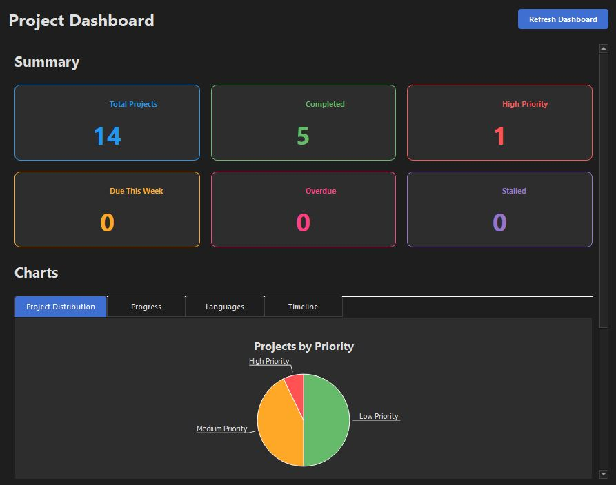

Supercharge Your Project Management
Project Organizer is a comprehensive tool designed specifically for programmers and developers who need to keep track of multiple projects, deadlines, and priorities.
Key Features
Project Management
Create, edit, and delete projects with ease.
- Track project name, language, priority
- Set deadlines and completion percentage
- Add detailed descriptions and notes
- Manage project dependencies
Filtering & Sorting
Find exactly what you need, when you need it.
- Filter by priority (High, Medium, Low)
- Filter by programming language
- Search by name or description
- Sort by date, priority, deadline, or completion
Dashboard & Statistics
Visualize your project portfolio at a glance.
- Project statistics and metrics
- Summary cards for quick insights
- Distribution charts by priority
- Progress tracking and timelines
Dark Theme Support
Easy on the eyes, perfect for night coding sessions.
- Comprehensive dark mode styling
- Modern, sleek interface
- Reduced eye strain
- Consistent styling across all components
Deadline Notifications
Never miss an important deadline again.
- System tray notifications
- Upcoming deadline alerts
- Daily summary notifications
- Customizable notification settings
Backup & Restore
Keep your project data safe and portable.
- Manual and automatic backups
- Restore from backup files
- Export to external locations
- Data loss prevention
Export Functionality
Share your project data in various formats.
- Export to JSON format
- CSV export for spreadsheet analysis
- Plain text reports
- Customizable export options
UI Enhancements
A powerful yet intuitive user experience.
- Responsive design with resizable panels
- Customizable UI elements
- Helpful tooltips and icons
- Modern, consistent styling
Ready to Get Organized?
Take control of your programming projects today with Project Organizer.